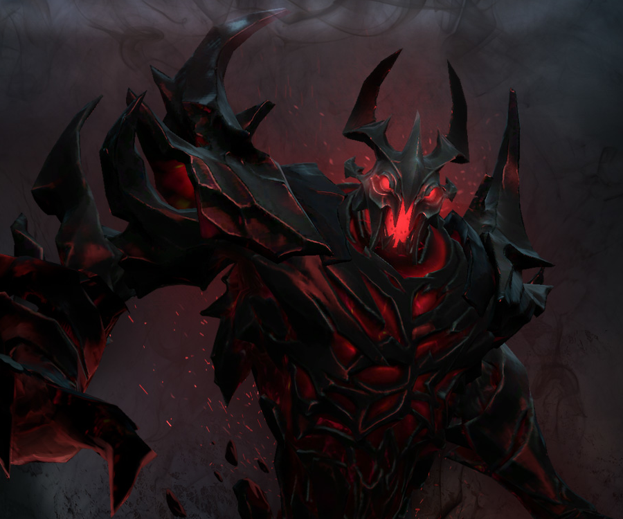
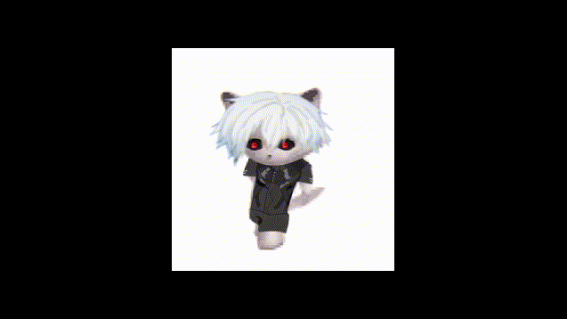
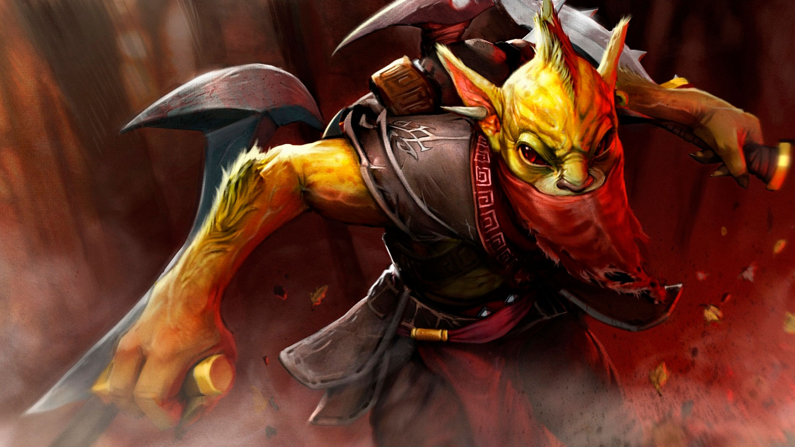
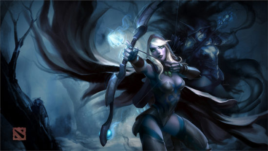

имеет 6 скилов которые помогают убивать других персонажей первые 3 очень похожы потому что они почти однаковые 1 скилл ближнего боя 2 скилл среднего боя 3 скил дальнего 4 скилл necromancers он даеет преймущество в уроне и 1 3 скиллам 5
5скилл понижает броню противника, 6 скилл ульта чем больше 4 скилла тем он будет сильнее
 Его первая способность, Shuriken Toss, запускает смертельный сюрикен во вражеское существо, нанося урон и оглушая цель. Сюрикен будет отскакивать между помеченными способностью Track существами, которые находятся в радиусе друг от друга. Вторая способность, Jinada, даёт Bounty Hunter возможность наносить удары с увеличенным уроном, а также красть золото у вражеских героев. Третья способность, Shadow Walk, позволяет герою уходить в невидимость, при этом получая возможность проходить сквозь крипов и героев до тех пор, пока он не нанесет удар или не использует способность. Если он выходит из невидимости атакуя, то замедляет скорость передвижения ударенного противника. Ультимативная способность, Track, отслеживает вражеского героя, раскрывая его невидимость и показывая количество золота у него, а также увеличивает скорость передвижения Bounty Hunter и его урон по цели.
1 даеет заснеженые стрелы наносят больше урон и замедляют противника. 2 скилл даеет безмолвие на некоторое время очень помогает против противников со скилами. 3 скилл имеет волны которые наносят проценты от урона 4 скилл ульта она пасивная( не нажымаеться ) очень много даеет урона от отак роботает от процентов
12 баллов